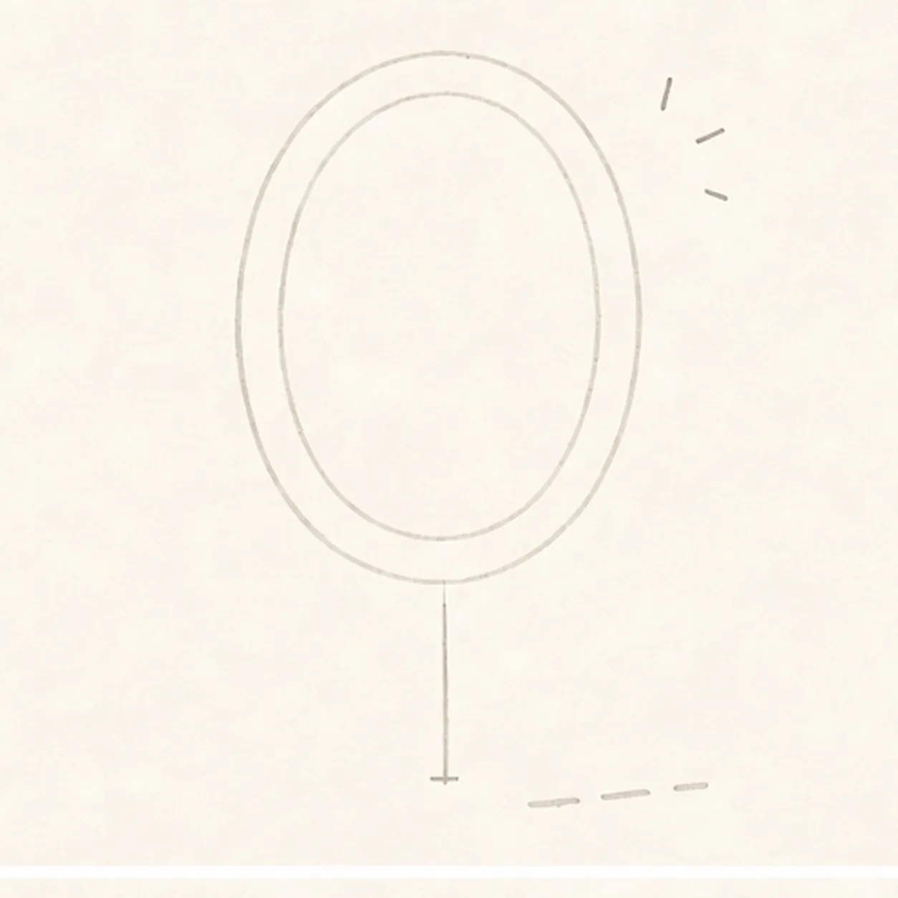
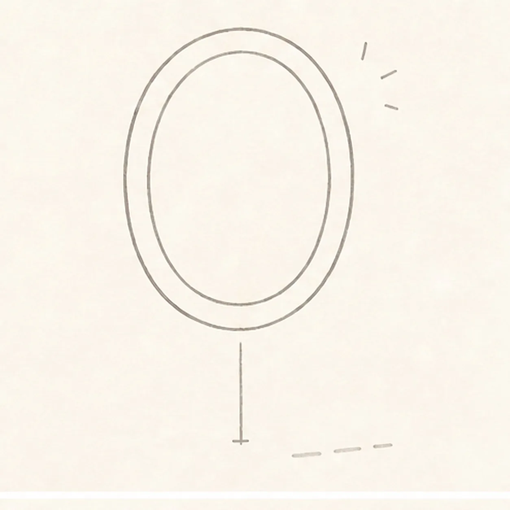
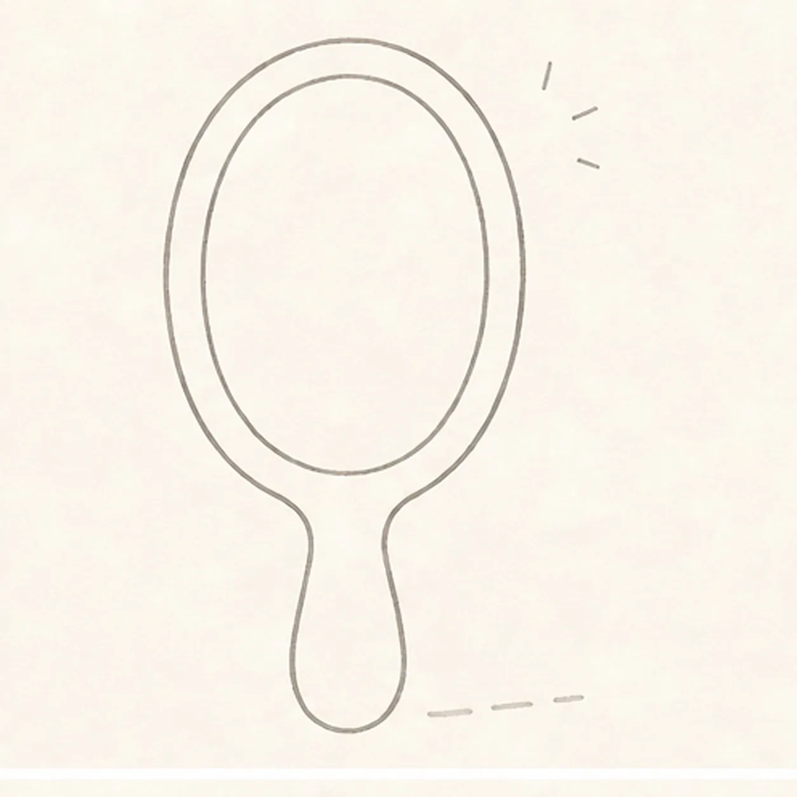
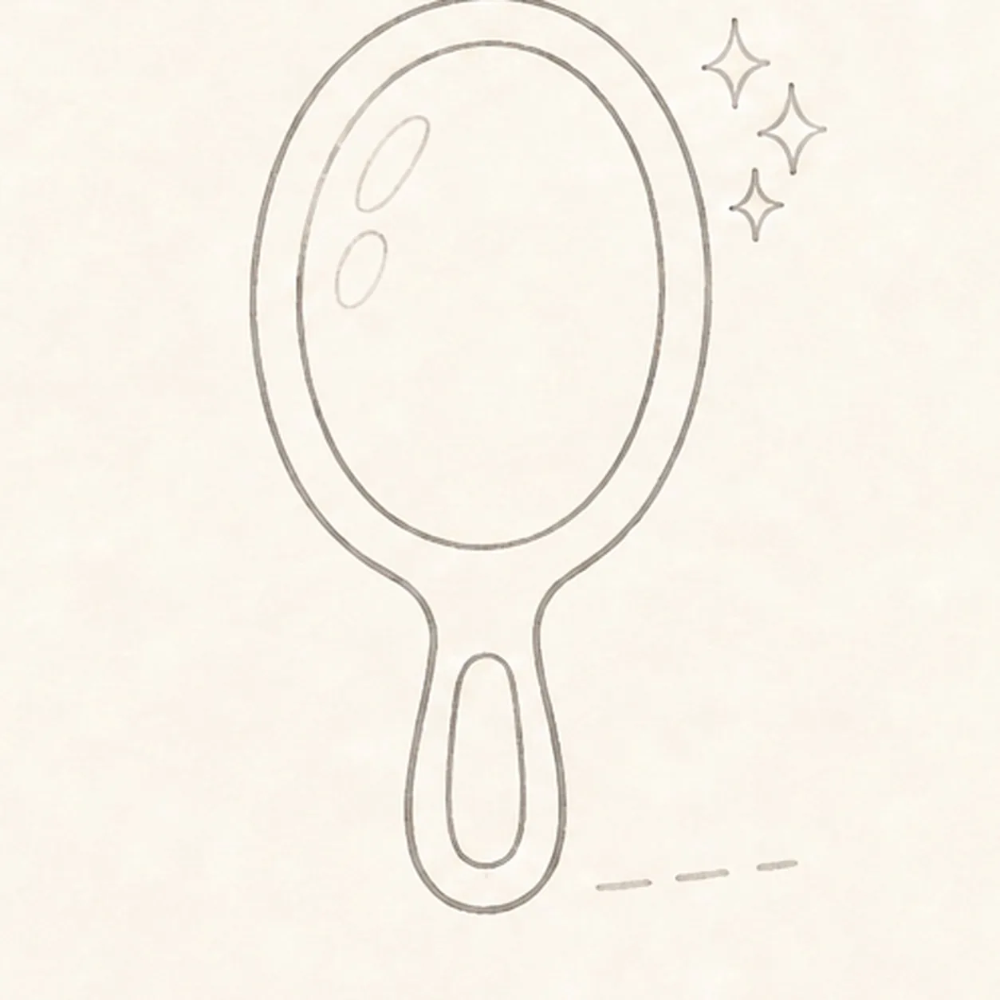
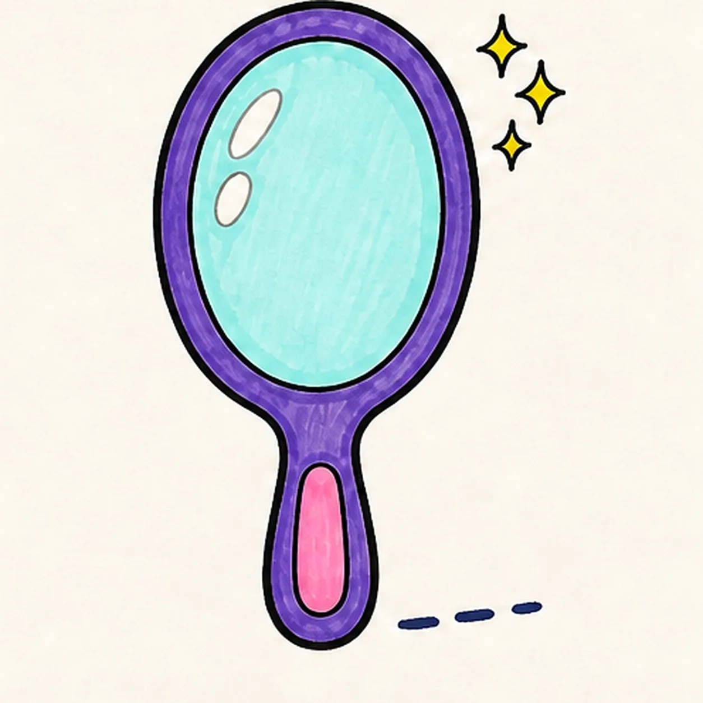

Marker ready?
Let's draw a cartoon hand mirror with sparkles
Treat this as one playful practice round: sketch the idea loosely, simplify the shapes, then commit with confident marker outlines and bright fills.
-
01

Map the mirror guides
Use pale pencil to place two nested ovals, one vertical center axis, one short downward handle route, exactly three upper-right sparkle ticks, and one short shadow route.
Marker tip: Keep the handle as one centerline only. Compare the empty ring between the ovals before you darken either curve.
-
02

Draw the oval frame
Connect only the thick oval frame over the two established guides while keeping the handle route and sparkle ticks visible.
Marker tip: Rotate the page and pull each oval in two relaxed arcs. Keep the frame width even enough to read, but not mechanically perfect.
-
03

Attach handle and glass
Wrap the lower route with one rounded handle and clarify the inner glass oval inside the established frame.
Marker tip: Center the handle on the vertical axis and tuck its top behind the frame. Check both attachment corners before closing the bottom curve.
-
04

Add grip sparkles and shines
Add one inset grip outline, turn the three ticks into exactly three sparkles, and reserve exactly two open-paper shine marks inside the glass.
Marker tip: Vary the three sparkle sizes while keeping all of them outside the glass. Leave the two highlight shapes unfilled from this stage onward.
-
05

Ink and map the colors
Ink the established contours and map purple, pink, pale aqua, yellow, and navy marker strokes in every planned region.
Marker tip: Ink the small sparkles and grip first, then rotate the page for the long ovals. Leave a few visible fill gaps for the final pass.
-
06

Finish the sparkling mirror
Complete only the established marker fills, strengthen selected keeper contours, and clarify the same grip, three sparkles, two highlights, and short shadow.
Marker tip: Count one handle, one grip, three sparkles, and two highlights before stopping. Do not add a reflected face or cosmetics the earlier steps did not build.